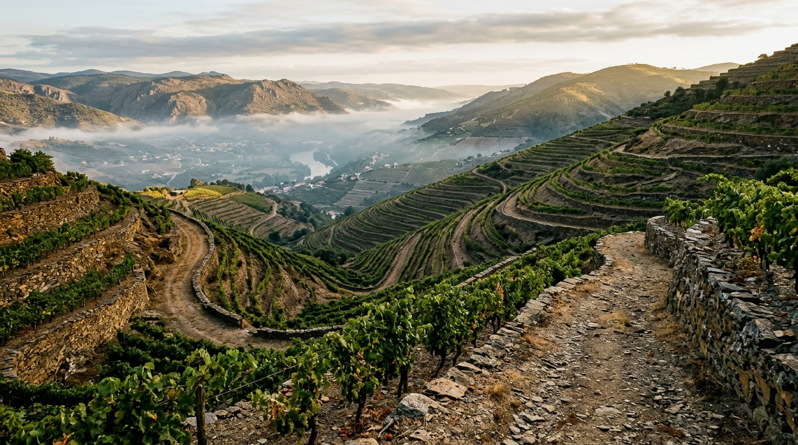

Casa José Pedro DOC Trás-os-Montes Tinto
Autêntico, fresco e aveludado: um tinto seco do norte de Portugal que combina cerejas e framboesas maduras com frescor vibrante e taninos macios na medida certa.
 • Valor único exclusivo R$49,90
• Valor único exclusivo R$49,90
Sem surpresas na hora de escolher: pegue na adega, escaneie e leve em segundos.
Por que você vai gostar deste vinho?
Vindo de montanhas com solos de xisto no norte de Portugal, o Casa José Pedro entrega personalidade de vinho português clássico com um frescor surpreendente e boca aveludada.
Rubi límpido e vibrante
Coloração rubi brilhante que traduz a vivacidade e a pureza da fruta cultivada em altitude.
Cerejas, framboesas e toque floral
Aromas intensos de frutas vermelhas maduras (cereja e framboesa) com delicadas notas florais típicas das uvas do norte português.
Textura aveludada e final persistente
Vinificado 100% em tanques de aço inox para guardar a fruta fresca: tem acidez viva (que dá água na boca), corpo médio e taninos macios.
Escolha certa se você prefere vinhos secos e gastronômicos, com mais frescor e elegância na boca — sem aquele peso excessivo ou gosto doce residual.
Mapa de Sabor
Guia visual rápido para você acertar na escolha
Combina com o quê?
Sua acidez viva faz dele um excelente companheiro para a cozinha do dia a dia: limpa o paladar entre uma garfada e outra e valoriza carnes, queijos e pratos portugueses.
Harmonizações Salgadas
O frescor natural deste DOC Trás-os-Montes equilibra muito bem carnes e pratos saborosos:
-
Carnes & Aves: Carnes vermelhas grelhadas (bife ancho, alcatra), frango ou pato assado e carnes suínas temperadas.
-
Culinária Portuguesa & Massas: Bacalhau ao forno com azeite e cebola, risoto de cogumelos ou massas com molho de carne.
-
Queijos & Petiscos: Queijos curados e de intensidade média (canastra maturado, parmesão em lascas, queijo curado português).
Harmonizações Doces
Como é um tinto seco com notas de cereja e framboesa, vai melhor com doces menos açucarados:
-
Chocolate Amargo: Chocolate intenso (65% a 70% de cacau), que equilibra a acidez viva do vinho.
-
Frutas & Queijos: Figos assados ou pera cozida no vinho tinto com queijo suave.
-
Tortas Leves: Torta rústica de cereja ou frutas vermelhas com pouco açúcar.
Jantar gastronômico em casa, bife grelhado ou noite de queijos.
Jantar a dois ou com amigos que apreciam vinhos secos autênticos.
Almoço especial de fim de semana ou jantar.
Entre 16°C e 18°C (15 a 20 min na geladeira antes de servir).
Do norte montanhoso de Portugal direto para sua taça
A Casa José Pedro pertence à família Pedro e produz seus vinhos na Quinta de Valpaços (cerca de 75 hectares em Rio Torto), na região demarcada de Trás-os-Montes — terra famosa por suas tradições folclóricas vibrantes, que inspiram o visual colorido e marcante da garrafa.
As vinhas crescem em solos de xisto ricos em minerais, que ajudam a reter umidade e equilibrar a temperatura entre verões quentes e invernos rigorosos, resultando em uvas sadias e vinhos de grande frescor e autenticidade.
Ficha Rápida do Rótulo
- Uvas Portuguesas:
- Alicante Bouschet, Tinta Roriz, Tinta Amarela e Touriga Franca
- Denominação / Solo:
- DOC Trás-os-Montes (Solos de Xisto)
- Produtor:
- Casa José Pedro (Quinta de Valpaços)
- Método / Estágio:
- 100% Cubas de Aço Inox
- Teor Alcoólico:
- 13% vol. • Seco